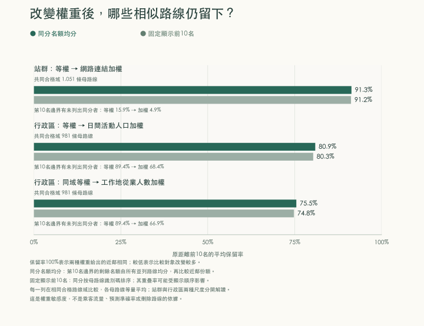
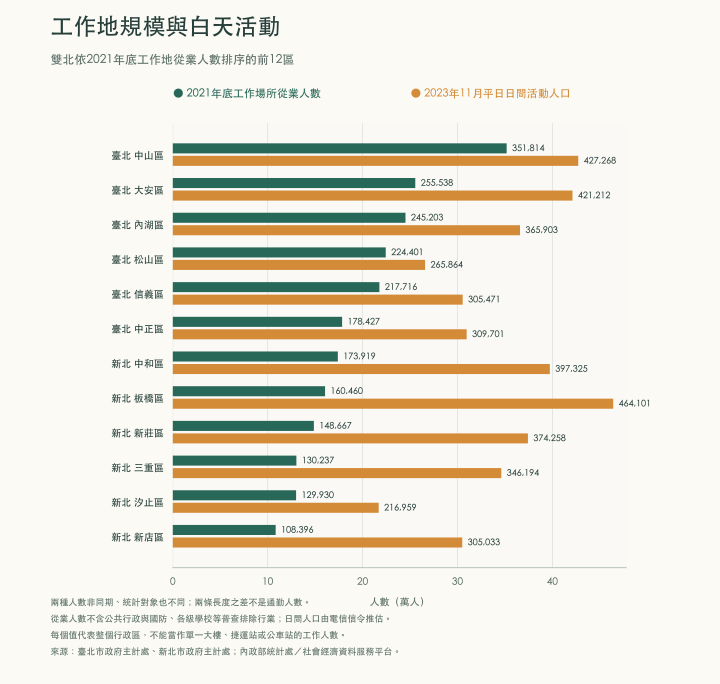

路線分工 · 工作地與活動人口
同到一個大站，
就算相似的路線嗎？
兩條公車都到市政府，可能從不同住宅區出發。先比較共同停靠的站點，再看它們共同服務的行政區，才能分辨相似性來自哪些地方。
這裡比較的是路線服務範圍。站點的重要性以停靠路線數衡量；區域的重要性分別以工作地從業人數與平日白天活動人口衡量。這些數字各有用途，不能直接換算成公車乘客量。
正在載入分析結果……
路線關係圖
座標怎麼讀？每個點是一條路線。橙色是你選的路線，藍色是依原始距離找出的前十條相似路線；將游標移到點上可看名稱，點擊可切換。
● 所選路線● 前十條相似路線● 其他路線
橫軸與縱軸是多維尺度法（MDS）配置出的兩個座標，不是經緯度，也沒有東西南北方向。二維圖會壓縮差異；下方排序與分數均取自降維前的距離。
哪些路線最相似？
相似度介於 0 與 1，1 表示在目前比較尺度下完全相同。行政區相同不表示站點相同；「檢視共同地點」可逐項核對分數來源。

| 路線 | 相似度 | 共同地點數 | 比較 |
|---|
正在載入公車與捷運的空間關係……
工作地與活動人口，呈現不同的城市需求
工作地從業人數統計人在何處工作；白天活動人口則估計平日在區內出現的人口。兩項資料的年份和涵蓋對象不同，圖上的差距不能解讀為通勤淨流入。

| 行政區 | 2021 工作地從業人數 | 2023 平日白天活動人口 |
|---|
工商及服務業普查未涵蓋公共行政、國防與正規學校等部門。信義區的統計可說明區域工作機會，不能分配成台北 101 或市政府單一站點的工作人數。
規劃上，先看共同節點之外服務了誰。
共同停靠重要站點，可以成為協調班表、轉乘動線和站位的理由；是否能整併路線，則要再比較住宅來源地、實際起訖旅次、服務時段與轉乘時間。捷運與公車同時出現在一個節點，是調查服務分工的起點。
閱讀政策意涵與後續研究 →